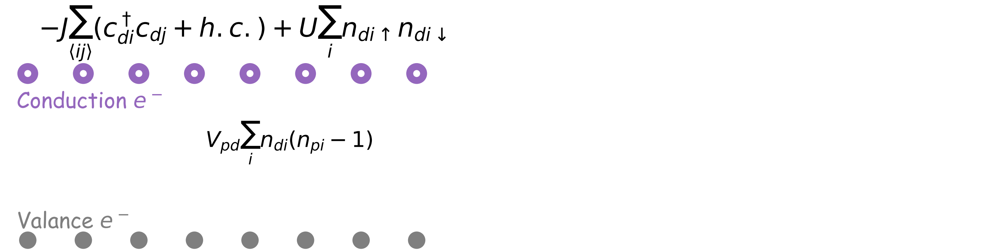
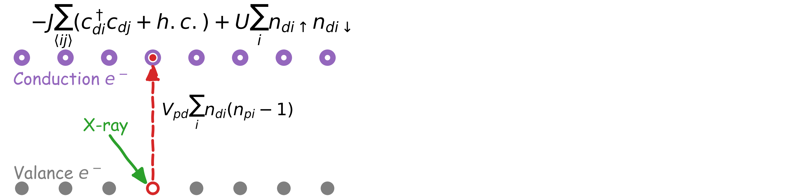
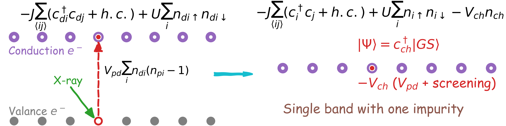

Time-resolved x-ray spectroscopy in one-dimensional strongly correlated systems
(TR-XAS)
Chen-Yen Lai
Los Alamos National Laboratory


X-ray absorption spectrum (XAS)
Pump-probe technique
Equilibrium XAS
Original Two band model
Original Two band model
Single band model with single X-ray photon event
- Fermi Hubbard model in 1D
$\mathcal{H}_{\text{FHM}}=-J\sum_{\langle ij \rangle,\sigma}(c^\dagger_{i\sigma}c_{j\sigma}+h.c.)+U\sum_in_{i\uparrow}n_{i\downarrow}\quad\Rightarrow\quad\mathcal{H}_{\text{FHM}}\vert GS\rangle=E_0\vert GS\rangle$
- X-ray photon excites one electron from valance band to conduction band, and create a core hole which has effective attractive potential.
$\vert\Psi(t=0)\rangle=c^\dagger_{ch}\vert GS\rangle;\quad\quad\mathcal{H}(t\geq0)=\mathcal{H}_{\text{FHM}}+\mathcal{H}_{\text{ch}}$, where $\mathcal{H}_{\text{ch}}=-V_{\text{ch}}n_{ch}$.
How to calculate XAS?
Effective one band model in 1D
$\mathcal{H}_{\text{FHM}}\vert GS\rangle=E_0\vert GS\rangle\quad$ obtained by DMRG(MPS).
$\vert\Psi(t=0)\rangle=c^\dagger_{ch}\vert GS\rangle\quad$ can be done in MPS formula.
$\mathcal{H}(t)=-J\sum_{\langle ij \rangle,\sigma}(c^\dagger_{i\sigma}c_{j\sigma}+h.c.)+U\sum_in_{i\uparrow}n_{i\downarrow}-V_{\text{ch}}n_{ch}$
XAS spectrum
\begin{eqnarray}
I_{\text{XAS}}(\omega)&\propto&\sum_\sigma\sum_f \vert\langle f \vert c_{ch,\sigma}^\dagger \vert 0 \rangle\vert^2 \delta(E_f-E_0-\hbar\omega)\\
&=& \frac{1}{\pi}\sum_\sigma\text{Im}\left[ -i\int_0^\infty dt e^{i(\hbar\omega+E_0)t}e^{-\color{red}\Gamma t} \color{green}{\langle GS \vert c_{ch,\sigma} }\color{blue}{e^{-i\mathcal{H}t} c_{ch,\sigma}^\dagger \vert GS \rangle} \right].
\end{eqnarray}
Non-equilibrium quench dynamics can be solved by time-dependent DMRG!
Effective one band model in 1D
$\mathcal{H}_{\text{FHM}}\vert GS\rangle=E_0\vert GS\rangle\quad$ obtained by DMRG(MPS).
$\vert\Psi(t=0)\rangle=c^\dagger_{ch}\vert GS\rangle\quad$ can be done in MPS formula.
$\mathcal{H}(t)=-J\sum_{\langle ij \rangle,\sigma}(c^\dagger_{i\sigma}c_{j\sigma}+h.c.)+U\sum_in_{i\uparrow}n_{i\downarrow}-V_{\text{ch}}n_{ch}$
XAS spectrum
\begin{eqnarray} I_{\text{XAS}}(\omega)&\propto&\sum_\sigma\sum_f \vert\langle f \vert c_{ch,\sigma}^\dagger \vert 0 \rangle\vert^2 \delta(E_f-E_0-\hbar\omega)\\ &=& \frac{1}{\pi}\sum_\sigma\text{Im}\left[ -i\int_0^\infty dt e^{i(\hbar\omega+E_0)t}e^{-\color{red}\Gamma t} \color{green}{\langle GS \vert c_{ch,\sigma} }\color{blue}{e^{-i\mathcal{H}t} c_{ch,\sigma}^\dagger \vert GS \rangle} \right]. \end{eqnarray} Non-equilibrium quench dynamics can be solved by time-dependent DMRG!
XAS for equilibrium state
Time-resolved XAS
Far-from-equilibrium XAS
Pump pulse before X-ray photon

Pump pulse Hamiltonian
XAS
Different frequency and strength of influence.
Dilute limit
Half-filling
$\tau=2t_0$, $\Omega t_0=3$, and $V_{ch}=-3J$.
- In Eqm., the strongest signal $\omega$ is corresponding to the doubly occupied (charge gap).
- The weight of the doubly occupied peak are diminished by the pump pulse.
- Under the same influence, the charge gap gets destroyed easier as coupling becomes stronger.
Conclusion and outlook
- (Far-from-)Equilibrium X-ray absorption spectrum (XAS) in 1D strongly correlated systems can be studied by MPS in time domain.
- Equilibrium XAS reveals the one particle excitation and the existence of charge gap at the half-filling.
- Far-from-equilibrium XAS under different influence are studied.
Acknowledgements
Collaborator: Jian-Xin Zhu (LANL), Jhih-Shih You(TU Dresden), Marton Kanasz-Nagy, and Eugene Demler(Harvard).
Funding: The center for integrated nanotechnologies (CINT), a DOE BES user facility.
Computational resources: LANL Institutional Computing (IC) program.